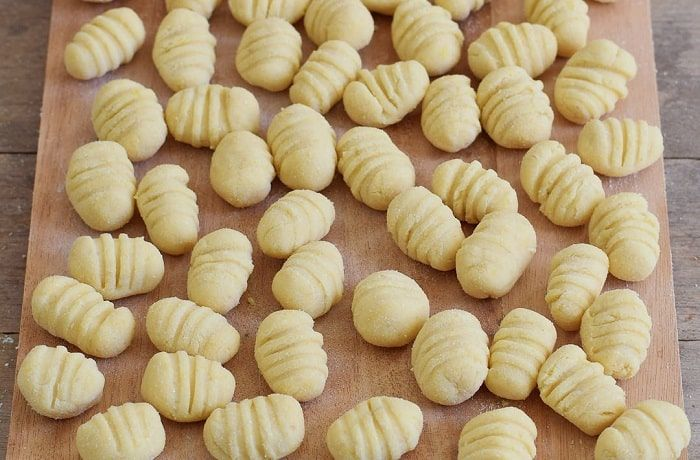

Fideos
- 400 gr de harina 0000
- 4 huevos
- Sal c/n
- Agua c/n
Ingredientes
- Hacer una corona de harina con la sal necesaria y en el centro colocar los huevos batidos.
- Integrar de a poco con un tenedor y luego con las manos.
- Buscar la textura perfecta usando harina si se pegotea la masa y agua si queda muy dura, siguiendo estas proporciones no será necesario.
- Amasar por 10 minutos y dejar descansar dentro de un trapo por otros 30 minutos. Estirar con un palo de amasar o con máquina de pastas.
- Si la masa está tensa y cuesta estirarla, dejar reposar 10 minutos más. Cortar las tiras del grosor que quieras.
- Animate a jugar con los grosores y las salsas en distintos platos!
- Hervir hasta que la pasta flote y a disfrutar.
Paso a paso
Sorrentinos

- 300 gr de harina 0000
- 3 huevos
- Sal c/n
- Relleno
Ingredientes
- Hacer una corona de harina con la sal necesaria y en el centro colocar los huevos batidos.
- Integrar de a poco con un tenedor y luego con las manos.
- Buscar la textura perfecta usando harina si se pegotea la masa y agua si queda muy dura, siguiendo estas proporciones no será necesario.
- Amasar por 10 minutos y dejar descansar dentro de un trapo por otros 30 minutos. Estirar con un palo de amasar o con máquina de pastas.
- Si la masa está tensa y cuesta estirarla, dejar reposar 10 minutos más. Cortar las tiras del grosor que quieras.
- Humedecer los bordes con agua, colocar la masa por encima y pasar el palo de amasar por encima para cortarlos.
- Sacalos del molde con un golpe seco y hervir hasta que la pasta flote.
Paso a paso
Ñoquis
- 1 kg de papa
- 300 gr de harina 0000
- 1 huevo
- Sal c/n
- Nuez moscada c/n
- Pimienta c/n
Ingredientes
- Lavar y hervir las papas con cáscara para que no absorba demasiado agua. Retirarla cuando al pinchar notes que están tiernas. Cuidado con no pasarlas de cocción.
- Pelar con cuidado y pisar en caliente, luego dejar enfriar.
- Mezcla la papa con el huevo y los condimentos y colocar la mezcla dentro de una corona de la harina necesaria.
- Unir todos los ingredientes sin amasar demasiado pero logrando integrar todo.
- Podes utilizar un cornet para ayudarte.
- Cortar la masa en 5 partes y formar tiras de dos cm de diámetro.
- Cortar cada tira de a 2 o 3 cm y hervir en abundante agua hasta que los ñoquis salgan a flote.
- Acompañar con tu salsa preferida y a disfrutar de cada 29!
Paso a paso
Ravioles
- 300 gr de harina 0000
- 3 huevos
- Sal c/n
- Relleno
Ingredientes
- Hacer una corona de harina con la sal necesaria y en el centro colocar los huevos batidos.
- Integrar de a poco con un tenedor y luego con las manos.
- Buscar la textura perfecta usando harina si se pegotea la masa y agua si queda muy dura, siguiendo estas proporciones no será necesario.
- Amasar por 10 minutos y dejar descansar dentro de un trapo por otros 30 minutos.
- Estirar con un palo de amasar o con máquina de pastas.
- Si la masa está tensa y cuesta estirarla, dejar reposar 10 minutos más.
- Colocar la masa sobre la mesada, colocar el relleno sobre ella con la distancia necesaria.
- Humedecer los bordes con agua y colocar la masa por encima.
- Cortar los ravioles en serie utilizando un cortante y hervir hasta que la pasta flote.